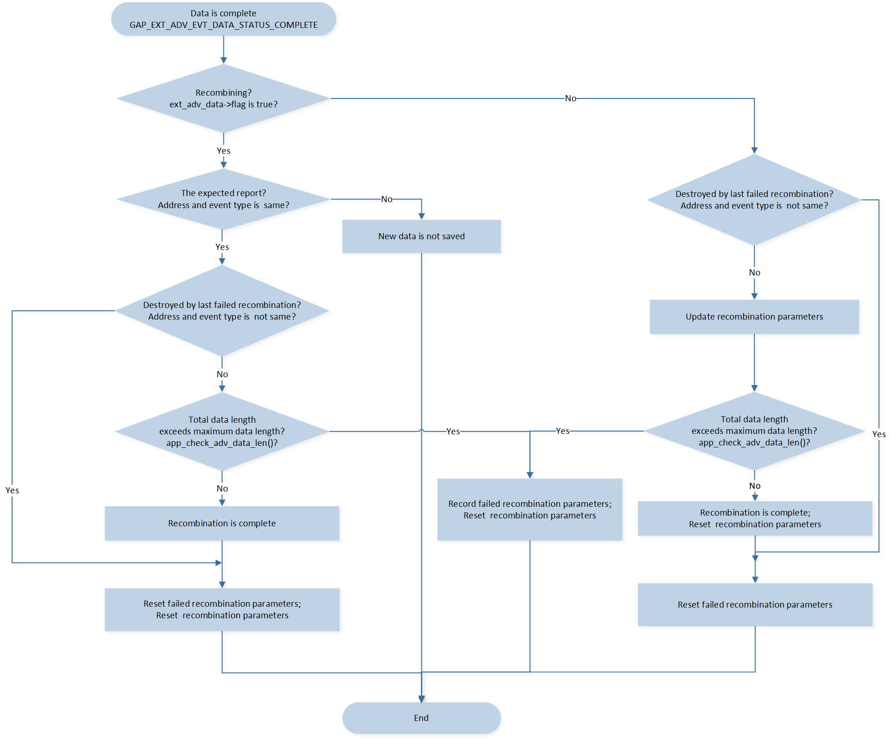

LE Central Extended Scan
ble_bt5_central 示例工程可以作为开发基于 Central 角色的 APP 的框架。
特征：
扫描 primary advertising channel (
LE 1M PHY或LE Coded PHY) 上的 advertising 数据包。设定 scan 的 duration 或 period scan。
可以作为 Central 角色发起一条 LE 链路，PHY 为
LE 1M PHY、LE 2M PHY或LE Coded PHY。
简介
使用 LE Advertising Extensions 的 central 设备可以与使用 legacy advertising PDUs 或 extended advertising PDUs 的设备通信，可以设置 scan 的持续时间。
若使用 extended advertising PDUs，与不同蓝牙版本的对端设备的兼容性如下表所示：
Bluetooth 5 Feature |
Bluetooth 4.0 |
Bluetooth 4.1 |
Bluetooth 4.2 |
Bluetooth 5.0 (Not Use LE Advertising Extensions) |
Bluetooth 5.0 (Use LE Advertising Extensions) |
|---|---|---|---|---|---|
LE Advertising Extensions |
Y |
Y |
Y |
Y |
Y |
环境需求
该示例支持以下开发工具包:
Hardware Platforms |
Board Name |
|---|---|
RTL87x2G HDK |
RTL87x2G EVB |
为快速搭建起开发环境，可参考 快速入门 中提供的详细指导。
硬件连线
该示例工程需要支持用户命令接口。 具体连线介绍请参考 用户命令接口 中的 Data UART 连接。
配置
配置选项
该示例工程全部配置选项在
samples\bluetooth\ble_bt5_central\src\app_flags.h 中，
开发者可以根据实际需求配置。
/** @brief Configure coding scheme of LE Coded PHY: 0 - S = 2, 1 - S = 8 */
#define LE_CODED_PHY_S8 0
/** @brief Configure APP LE link number */
#define APP_MAX_LINKS 1
/** @brief Configure APP to recombine advertising data: 0 - Disable recombine advertising data feature, 1 - recombine advertising data */
#define APP_RECOMBINE_ADV_DATA 0
开发者可以通过 APP_RECOMBINE_ADV_DATA 来配置示例工程重组 advertising 数据。Advertising 数据重组的流程在 代码介绍 的 Advertising 数据重组 中进行介绍。
生成系统配置文件
开发者可以通过 MPTool 配置链接个数：
Configurable Item |
Value |
|---|---|
LE Maser Link Num |
≥ APP_MAX_LINKS |
更多有关于 MPTool 配置的信息请参考 快速入门 中的 生成 System Config File。
编译和下载
该示例可以在 SDK 文件夹中找到:
Project file: samples\bluetooth\ble_bt5_central\proj\rtl87x2g\mdk
Project file: samples\bluetooth\ble_bt5_central\proj\rtl87x2g\gcc
编译和运行该示例请遵循以下步骤:
打开项目文件。
要编译目标文件，请参考 快速入门 的 编译 APP Image 中列出的步骤。
编译成功后，目录
samples\bluetooth\ble_bt5_central\proj\rtl87x2g\mdk\bin下会生成 APP bin 文件app_MP_sdk_xxx.bin。在 EVB 上按下 reset 键，程序将开始运行。
测试验证
将示例工程烧录到 EVB 后，开发者可以使用另一个运行 LE Peripheral Extended ADV 示例工程的开发板进行测试。
与另一块开发板对测
准备两块开发板分别命名为 DUT 和 Tester ，开发者可以使用 Debug Analyzer 做 Log 验证 。
Primary Advertising Channel 是 LE 1M PHY，Secondary Advertising Channel 是 LE 2M PHY
准备步骤
使用 MPTool 将 DUT 地址设为 [00:11:22:33:44:92]，然后编译 ble_bt5_central 示例工程并将 images 下载至 DUT。
首先将
ADVERTISING_PHY设为APP_PRIMARY_1M_SECONDARY_2M。 使用 MPTool 将 Tester 地址设为 [00:11:22:33:44:91]，然后编译 ble_bt5_peripheral 示例工程并下载 images 至 Tester。更多信息请参见 LE Peripheral Extended ADV 中的 编译和下载。
更多关于如何修改 蓝牙地址 的细节请查阅 快速入门 中的 生成 System Config File。
测试步骤
按 Tester 上的 reset 键， Tester 将开始发送可连接的非定向广播。
如果成功启动广播，会打印下面的 Debug Analyzer 日志。 如果没有看到下列日志，说明广播启动失败。请检查软件和硬件环境。
[APP] !**GAP_MSG_LE_EXT_ADV_ENABLE:cause 0x0 [APP] !**app_handle_ext_adv_state_evt: adv_handle = 0 oldState = 1 [APP] !**app_handle_ext_adv_state_evt: adv_handle = 0 newState = 2 [APP] !**EXT_ADV_STATE_ADVERTISING: adv_handle 0, cause 0x0
按 DUT 上的 reset 键，开发者可以在电脑的串口助手工具端输入用户命令。
如果 DUT 成功启动且串口辅助工具配置成功， 开发者会看到如下日志。串口辅助工具端会显示本地地址。 如果没有看到下列日志，请检查软件和硬件环境。
local bd addr: xx:xx:xx:xx:xx:xx一条连线的测试流程如下:
Step
DUT User Command
Description
DUT Log
1
escan 2 5
DUT scan mode 设置为 2，设备持续 scanning 的时间不能超过 Duration 参数。Scan PHYs 设置为 5 (LE 1M PHY 和 LE Coded PHY)。启动 extended scanning 且 scanning 时间不超过 Duration，查看附近处于可发现状态且 primary advertising channel 是 LE 1M PHY 或 LE Coded PHY 的 BLE 设备的信息。
Serial port assistant tool shows:
GAP scan start2
stopescan
DUT 停止 extended scanning。
Serial port assistant tool shows:
GAP scan stop3
showdev
显示扫描设备列表。
Serial port assistant tool shows:
dev list ...... RemoteBd[8] = [00:11:22:33:44:91] ......4
condev 8 x001
对 primary advertising channel 为 LE 1M PHY 的 connectable advertising events 进行 scan，并发起 connection。Secondary advertising channel 是 LE 2M PHY，因此 TX PHY 和 RX PHY 类型均为 LE 2M PHY。
Serial port assistant tool shows:
Connected success conn_id 0, tx_phy 2, rx_phy 25
showcon
显示连接信息。
Serial port assistant tool shows:
conn_id 0 state 0x00000002 role 1 RemoteBd = [00:11:22:33:44:91] type = 0 active link num 1, idle link num 06
disc 0
与 Tester 断连。
Serial port assistant tool shows:
Disconnect conn_id 0, dis_cause 0x000001167
condev 8 x001
与 Tester 回连。
Serial port assistant tool shows:
Connected success conn_id 0, tx_phy 2, rx_phy 2
在上述 Step 2 中，当宏定义 APP_RECOMBINE_ADV_DATA 为 1 时，来自 Tester 的第一个 advertising report 如下。该 advertising report 表示 Tester 使用 extended advertising PDUs 发送 connectable undirected advertising，且 primary advertising PHY 是 LE 1M PHY，secondary advertising PHY 是 LE 2M PHY。由于会收到更多的数据， DUT 启动重组流程并等待更多的数据。
[APP] app_gap_callback: cb_type = 0x50
[APP] !**GAP_MSG_LE_EXT_ADV_REPORT_INFO:connectable 1, scannable 0, direct 0, scan response 0, legacy 0, data status 0x1
[APP] !**GAP_MSG_LE_EXT_ADV_REPORT_INFO:event_type 0x1, bd_addr 00::11::22::33::44::00, addr_type 0, rssi -45, data_len 229
[APP] !**GAP_MSG_LE_EXT_ADV_REPORT_INFO:primary_phy 1, secondary_phy 2, adv_sid 0, tx_power 127, peri_adv_interval 0
[APP] !**GAP_MSG_LE_EXT_ADV_REPORT_INFO:direct_addr_type 0x0, direct_addr 00::00::00::00::00::00
[APP] !**app_handle_ext_adv_report: Old ext_adv_data->flag is 0, data status is 0x1
[APP] !**app_handle_ext_adv_report:First Data from bd_addr 00::11::22::33::44::00, data length is 229, and waiting more data
[APP] !**app_handle_ext_adv_report: New ext_adv_data->flag is 1
来自 Tester 最后一个 advertising report 如下。该 advertising report 表示数据是完整的。 DUT 完成 advertising 数据重组，来自 Tester 的 advertising 数据长度为 245 字节。
[APP] app_gap_callback: cb_type = 0x50
[APP] !**GAP_MSG_LE_EXT_ADV_REPORT_INFO:connectable 1, scannable 0, direct 0, scan response 0, legacy 0, data status 0x0
[APP] !**GAP_MSG_LE_EXT_ADV_REPORT_INFO:event_type 0x1, bd_addr 00::11::22::33::44::00, addr_type 0, rssi -45, data_len 16
[APP] !**GAP_MSG_LE_EXT_ADV_REPORT_INFO:primary_phy 1, secondary_phy 2, adv_sid 0, tx_power 127, peri_adv_interval 0
[APP] !**GAP_MSG_LE_EXT_ADV_REPORT_INFO:direct_addr_type 0x0, direct_addr 00::00::00::00::00::00
[APP] !**app_handle_ext_adv_report: Old ext_adv_data->flag is 1, data status is 0x0
[APP] !**app_handle_ext_adv_report: Data from bd_addr 00::11::22::33::44::00 is complete, event type is 0x1, total data length is 245
[APP] !**app_handle_ext_adv_report: First five datas are 0x2, 0x1, 0x5, 0x13, 0x9
[APP] !**app_handle_ext_adv_report: Last five datas are 0xd5, 0xd6, 0xd7, 0xd8, 0xd9
[APP] !**app_handle_ext_adv_report: New ext_adv_data->flag is 0
Primary Advertising Channel 是 LE Coded PHY，Secondary Advertising Channel 是 LE Coded PHY
测试步骤
使用 MPTool 将 DUT 地址设为 [00:11:22:33:44:92]，然后编译 ble_bt5_central 示例工程并下载 images 至 DUT 。
首先，将
ADVERTISING_PHY设为APP_PRIMARY_CODED_SECONDARY_CODED。 使用 MPTool 将 Tester 地址设为 [00:11:22:33:44:91]，然后编译 ble_bt5_peripheral 示例工程并下载 images 至 Tester。 更多信息请参见 LE Peripheral Extended ADV 中的 编译和下载。
更多关于如何修改 蓝牙地址 的细节请查阅 快速入门 中的 生成 System Config File。
测试步骤
按 Tester 上的 reset 键， Tester 将开始发送可连接的非定向广播。
如果成功启动广播，会打印下面的 Debug Analyzer 日志。 如果没有看到下列日志，说明广播启动失败。请检查软件和硬件环境。
[APP] !**GAP_MSG_LE_EXT_ADV_ENABLE:cause 0x0 [APP] !**app_handle_ext_adv_state_evt: adv_handle = 0 oldState = 1 [APP] !**app_handle_ext_adv_state_evt: adv_handle = 0 newState = 2 [APP] !**EXT_ADV_STATE_ADVERTISING: adv_handle 0, cause 0x0
按 DUT 上的 reset 键，开发者可以在电脑的串口助手工具端输入用户命令。
如果 DUT 成功启动且串口辅助工具配置成功， 开发者会看到如下日志。串口辅助工具端会显示本地地址。 如果没有看到下列日志，请检查软件和硬件环境。
local bd addr: xx:xx:xx:xx:xx:xx一条连线的测试流程如下：
Step
DUT User Command
Description
DUT Log
1
escan 0 5
DUT scan mode 设置为 0，设备持续 scanning 直到停止 scanning。Scan PHYs 设置为 5 (LE 1M PHY 和 LE Coded PHY)。启动 extended scanning，查看附近处于可发现状态且 primary advertising channel 是 LE 1M PHY 或 LE Coded PHY 的 BLE 设备的信息。
Serial port assistant tool shows:
GAP scan start2
stopescan
DUT 停止 extended scanning。
Serial port assistant tool shows:
GAP scan stop3
showdev
显示扫描设备列表。
Serial port assistant tool shows:
dev list ...... RemoteBd[3] = [47:78:39:48:32:1a] RemoteBd[4] = [00:11:22:33:44:91]4
condev 4 x100
对 primary advertising channel 为 LE Coded PHY 的 connectable advertising events 进行 scan，并发起 connection。Secondary advertising channel 是 LE Coded PHY，因此 TX PHY 和 RX PHY 类型均为 LE Coded PHY。
Serial port assistant tool shows:
Connected success conn_id 0, tx_phy 3, rx_phy 35
showcon
显示连接信息。
Serial port assistant tool shows:
ShowCon conn_id 0 state 0x00000002 role 1 RemoteBd = [00:11:22:33:44:91] type = 0 active link num 1, idle link num 06
disc 0
与 Tester 断线。
Serial port assistant tool shows:
Disconnect conn_id 0, dis_cause 0x000001167
condev 4 x100
与 Tester 回连。
Serial port assistant tool shows:
Connected success conn_id 0, tx_phy 3, rx_phy 3
在上述 Step 2，当宏定义 APP_RECOMBINE_ADV_DATA 为 1 时，来自 Tester 的第一个 advertising report 如下。该 advertising report 表示 Tester 使用 extended advertising PDUs 发送可连接非定向广播，且 primary advertising PHY 是 LE Coded PHY，secondary advertising PHY 是 LE Coded PHY。由于会收到更多的数据， DUT 启动重组流程并等待更多的数据。
[APP] app_gap_callback: cb_type = 0x50
[APP] !**GAP_MSG_LE_EXT_ADV_REPORT_INFO:connectable 1, scannable 0, direct 0, scan response 0, legacy 0, data status 0x1
[APP] !**GAP_MSG_LE_EXT_ADV_REPORT_INFO:event_type 0x1, bd_addr 00::11::22::33::44::00, addr_type 0, rssi -41, data_len 229
[APP] !**GAP_MSG_LE_EXT_ADV_REPORT_INFO:primary_phy 3, secondary_phy 3, adv_sid 0, tx_power 127, peri_adv_interval 0
[APP] !**GAP_MSG_LE_EXT_ADV_REPORT_INFO:direct_addr_type 0x0, direct_addr 00::00::00::00::00::00
[APP] !**app_handle_ext_adv_report: Old ext_adv_data->flag is 0, data status is 0x1
[APP] !**app_handle_ext_adv_report:First Data from bd_addr 00::11::22::33::44::00, data length is 229, and waiting more data
[APP] !**app_handle_ext_adv_report: New ext_adv_data->flag is 1
来自 Tester 最后一个 advertising report 如下。该 advertising report 表示数据是完整的。 DUT 完成 advertising 数据重组，来自 Tester 的 advertising 数据长度为 245 字节。
[APP] app_gap_callback: cb_type = 0x50
[APP] !**GAP_MSG_LE_EXT_ADV_REPORT_INFO:connectable 1, scannable 0, direct 0, scan response 0, legacy 0, data status 0x0
[APP] !**GAP_MSG_LE_EXT_ADV_REPORT_INFO:event_type 0x1, bd_addr 00::11::22::33::44::00, addr_type 0, rssi -41, data_len 16
[APP] !**GAP_MSG_LE_EXT_ADV_REPORT_INFO:primary_phy 3, secondary_phy 3, adv_sid 0, tx_power 127, peri_adv_interval 0
[APP] !**GAP_MSG_LE_EXT_ADV_REPORT_INFO:direct_addr_type 0x0, direct_addr 00::00::00::00::00::00
[APP] !**app_handle_ext_adv_report: Old ext_adv_data->flag is 1, data status is 0x0
代码介绍
本章将按照以下几个部分进行介绍：
源码路径 中介绍项目目录和源代码文件。
Bluetooth Host 介绍 中介绍了 Bluetooth Host 相关信息。
初始化 中介绍可配参数和 Bluetooth Host 初始化。
GAP 消息处理 中介绍本示例工程的 GAP 消息处理。
GAP 回调函数处理 中介绍本示例工程的 GAP 回调函数处理。
Advertising 数据重组 中介绍 Advertising 数据重组的流程。
源码路径
工程目录:
samples\bluetooth\ble_bt5_central\proj。源码目录:
samples\bluetooth\ble_bt5_central\src。
ble_bt5_central 示例工程中的源文件当前被分为几个组，如下所示：
└── Project: bt5_central
└── secure_only_app
└── Device includes startup code
├── CMSE Library Non-secure callable library
├── Lib includes all binary symbol files that user application is built on
├── ROM_NS.lib
└── lowerstack.lib
└── rtl87x2g_sdk.lib
└── gap_utils.lib
├── peripheral includes all peripheral drivers and module code used by the application
├── Profile includes LE profiles or services used by the sample application
└── APP includes the ble_bt5_central user application implementation
├── app_task.c
├── main.c
├── bt5_central_app.c
├── link_mgr.c
├── user_cmd.c
├── data_uart.c
└── data_cmd_parse.c
示例工程使用与 bt_host_0_0 匹配的默认 GAP LIB，请参阅文档 Host Image 中的 GAP LIB 的使用方法 以获取更多信息。
Bluetooth Host 介绍
示例工程默认使用 Bluetooth Host image 版本 bt_host_0_0，更多信息可参阅
Host Image。
关于 Bluetooth Host 所支持的蓝牙功能的详细信息，请参阅文件 bin\rtl87x2g\bt_host_image\bt_host_0_0\bt_host_config.h。
初始化
当 EVB 启动并且芯片复位时，main() 函数将被调用，它执行以下初始化函数：
int main(void)
{
board_init();
le_gap_init(APP_MAX_LINKS);
gap_lib_init();
app_le_gap_init();
pwr_mgr_init();
task_init();
os_sched_start();
return 0;
}
le_gap_init()用于初始化 GAP 并配置链接个数。app_le_gap_init()用于初始化 GAP 参数，开发者可以自行配置以下参数：Device name 和 device appearance，LE Advertising Extensions 参数，GAP Bond Manager 参数（请参考 LE Host 中的 Device Name 和 Device Appearance 的配置 章节，LE Advertising Extensions 参数的配置 章节，Bond Manager 参数的配置 章节，其它参数的配置 章节）。
void app_le_gap_init(void)
{
/* Device name and device appearance */
......
/* GAP Bond Manager parameters */
......
/* LE Advertising Extensions parameters */
bool use_extended = true;
/* Allocate memory for recombining advertising data */
#if APP_RECOMBINE_ADV_DATA
ext_adv_data = os_mem_zalloc(RAM_TYPE_DATA_ON, sizeof(T_EXT_ADV_DATA));
ext_adv_data->flag = false;
#endif
le_set_gap_param(GAP_PARAM_DEFAULT_DATA_LEN_MAX_TX_OCTETS, sizeof(max_data_len_tx_oct),
&max_data_len_tx_oct);
le_set_gap_param(GAP_PARAM_DEFAULT_DATA_LEN_MAX_TX_TIME, sizeof(max_data_len_tx_time),
&max_data_len_tx_time);
/* Set device name and device appearance */
le_set_gap_param(GAP_PARAM_DEVICE_NAME, GAP_DEVICE_NAME_LEN, device_name);
le_set_gap_param(GAP_PARAM_APPEARANCE, sizeof(appearance), &appearance);
/* Setup the GAP Bond Manager */
gap_set_param(GAP_PARAM_BOND_PAIRING_MODE, sizeof(auth_pair_mode), &auth_pair_mode);
gap_set_param(GAP_PARAM_BOND_AUTHEN_REQUIREMENTS_FLAGS, sizeof(auth_flags), &auth_flags);
gap_set_param(GAP_PARAM_BOND_IO_CAPABILITIES, sizeof(auth_io_cap), &auth_io_cap);
gap_set_param(GAP_PARAM_BOND_OOB_ENABLED, sizeof(auth_oob), &auth_oob);
le_bond_set_param(GAP_PARAM_BOND_FIXED_PASSKEY, sizeof(auth_fix_passkey), &auth_fix_passkey);
le_bond_set_param(GAP_PARAM_BOND_FIXED_PASSKEY_ENABLE, sizeof(auth_use_fix_passkey),
&auth_use_fix_passkey);
le_bond_set_param(GAP_PARAM_BOND_SEC_REQ_REQUIREMENT, sizeof(auth_sec_req_flags),
&auth_sec_req_flags);
/* Use LE Advertising Extensions */
le_set_gap_param(GAP_PARAM_USE_EXTENDED_ADV, sizeof(use_extended), &use_extended);
/* Register gap message callback */
le_register_app_cb(app_gap_callback);
}
更多关于LE GAP初始化和启动流程的信息可以查阅 LE Host 中的 GAP 参数的初始化。
GAP 消息处理
当APP从Bluetooth Host接收到GAP消息时，函数 app_handle_gap_msg() 会被调用。
更多关于GAP消息的信息可以查阅 LE Host 中的 蓝牙状态消息。
当收到 GAP_MSG_LE_CONN_STATE_CHANGE 消息时，APP将更新link状态。
void app_handle_conn_state_evt(uint8_t conn_id, T_GAP_CONN_STATE new_state, uint16_t disc_cause)
{
APP_PRINT_INFO4("app_handle_conn_state_evt: conn_id %d, conn_state(%d -> %d), disc_cause 0x%x",
conn_id, gap_conn_state, new_state, disc_cause);
switch (new_state)
{
case GAP_CONN_STATE_DISCONNECTED:
{
if ((disc_cause != (HCI_ERR | HCI_ERR_REMOTE_USER_TERMINATE))
&& (disc_cause != (HCI_ERR | HCI_ERR_LOCAL_HOST_TERMINATE)))
{
APP_PRINT_ERROR1("app_handle_conn_state_evt: connection lost cause 0x%x", disc_cause);
}
}
data_uart_print("Disconnect conn_id %d, dis_cause 0x%x\r\n", conn_id, disc_cause);
break;
case GAP_CONN_STATE_CONNECTED:
{
uint8_t tx_phy;
uint8_t rx_phy;
uint16_t conn_interval;
uint16_t conn_latency;
uint16_t conn_supervision_timeout;
uint8_t remote_bd[6];
T_GAP_REMOTE_ADDR_TYPE remote_bd_type;
le_get_conn_param(GAP_PARAM_CONN_INTERVAL, &conn_interval, conn_id);
le_get_conn_param(GAP_PARAM_CONN_LATENCY, &conn_latency, conn_id);
le_get_conn_param(GAP_PARAM_CONN_TIMEOUT, &conn_supervision_timeout, conn_id);
le_get_conn_addr(conn_id, remote_bd, (uint8_t *)&remote_bd_type);
APP_PRINT_INFO5("GAP_CONN_STATE_CONNECTED:remote_bd %s, remote_addr_type %d, conn_interval 0x%x, conn_latency 0x%x, conn_supervision_timeout 0x%x",
TRACE_BDADDR(remote_bd), remote_bd_type,
conn_interval, conn_latency, conn_supervision_timeout);
le_get_conn_param(GAP_PARAM_CONN_TX_PHY_TYPE, &tx_phy, conn_id);
le_get_conn_param(GAP_PARAM_CONN_RX_PHY_TYPE, &rx_phy, conn_id);
data_uart_print("Connected success conn_id %d, tx_phy %d, rx_phy %d\r\n", conn_id, tx_phy, rx_phy);
}
break;
default:
break;
}
gap_conn_state = new_state;
}
GAP 回调函数处理
app_gap_callback() 用于处理 GAP 回调函数消息，更多关于 GAP 回调函数的信息参见 LE Host 中的 Bluetooth LE GAP 回调函数。
若设备启动 extended scan 之后收到 advertising 数据或 scan response 数据，GAP 层将使用 GAP_MSG_LE_EXT_ADV_REPORT_INFO 消息通知 APP。示例代码如下：
T_APP_RESULT app_gap_callback(uint8_t cb_type, void *p_cb_data)
{
T_APP_RESULT result = APP_RESULT_SUCCESS;
T_LE_CB_DATA *p_data = (T_LE_CB_DATA *)p_cb_data;
APP_PRINT_TRACE1("app_gap_callback: cb_type = 0x%x", cb_type);
switch (cb_type)
{
case GAP_MSG_LE_EXT_ADV_REPORT_INFO:
......
link_mgr_add_device(p_data->p_le_ext_adv_report_info->bd_addr,
p_data->p_le_ext_adv_report_info->addr_type);
#if APP_RECOMBINE_ADV_DATA
if (!(p_data->p_le_ext_adv_report_info->event_type & GAP_EXT_ADV_REPORT_BIT_USE_LEGACY_ADV))
{
/* If the advertisement uses extended advertising PDUs, recombine advertising data. */
app_handle_ext_adv_report(p_data->p_le_ext_adv_report_info->event_type,
p_data->p_le_ext_adv_report_info->data_status, p_data->p_le_ext_adv_report_info->bd_addr,
p_data->p_le_ext_adv_report_info->data_len, p_data->p_le_ext_adv_report_info->p_data);
}
#endif
break;
......
}
Advertising 数据重组
Advertising 数据的重组实现对一组 advertising 数据或 scan response 数据的重组，在下次重组之前会删除已重组的 advertising 数据。该重组流程可以作为开发同时重组多组 advertising data 的框架。
在 GAP 初始化时申请用于重组 advertising 数据的内存，示例代码如下:
void app_le_gap_init(void)
{
......
/* Allocate memory for recombining advertising data */
#if APP_RECOMBINE_ADV_DATA
ext_adv_data = os_mem_zalloc(RAM_TYPE_DATA_ON, sizeof(T_EXT_ADV_DATA));
ext_adv_data->flag = false;
#endif
......
}
// Message data structure is T_EXT_ADV_DATA.
typedef struct
{
uint8_t bd_addr[GAP_BD_ADDR_LEN]; /**< remote BD */
bool
flag; /**< flag of recombining advertising data, true: recombining, false: waiting extended advertising PDUs */
uint16_t event_type; /**< advertising event type */
uint16_t data_len; /**< length of recombined advertising data */
uint8_t p_data[APP_MAX_EXT_ADV_TOTAL_LEN]; /**< recombined advertising data */
} T_EXT_ADV_DATA;
APP 在 app_gap_callback() 中处理 GAP_MSG_LE_EXT_ADV_REPORT_INFO 消息，该消息表示收到 advertising 数据或 scan response 数据，处理流程参见 GAP 回调函数处理。
若该 extended advertising report 表示使用的是 extended advertising PDU，APP 将调用 app_handle_ext_adv_report() 以重组 advertising 数据。以下章节描述 advertising 数据的重组流程，相关代码参见 bt5_central_app.c 的 app_handle_ext_adv_report() 函数。
GAP_EXT_ADV_EVT_DATA_STATUS_COMPLETE
GAP_EXT_ADV_EVT_DATA_STATUS_COMPLETE 表示数据是完整的。Data status 为 GAP_EXT_ADV_EVT_DATA_STATUS_COMPLETE 的 advertising report 的处理流程如图所示：
{kind=link}

重组流程图(GAP_EXT_ADV_EVT_DATA_STATUS_COMPLETE)
GAP_EXT_ADV_EVT_DATA_STATUS_MORE
GAP_EXT_ADV_EVT_DATA_STATUS_MORE 表示数据是不完整的且将会收到更多的数据。Data status 为 GAP_EXT_ADV_EVT_DATA_STATUS_MORE 的 advertising report 的处理流程如图所示：
重组流程图（GAP_EXT_ADV_EVT_DATA_STATUS_MORE）
在处理 data status 为 GAP_EXT_ADV_EVT_DATA_STATUS_MORE 的 advertising report 之后，APP 需要等待 advertising report 以完成重组。data status 为 GAP_EXT_ADV_EVT_DATA_STATUS_COMPLETE 的 advertising report 表示重组已完成。
GAP_EXT_ADV_EVT_DATA_STATUS_TRUNCATED
GAP_EXT_ADV_EVT_DATA_STATUS_TRUNCATED 表示数据是不完整，数据是截断的。若具有截断数据的 advertising report 是 APP 等待的 report，APP 将通过重置重组参数以终止当前的重组流程，并等待 advertising report 以启动下一次重组流程。
See Also
相关 API Reference 请查看：